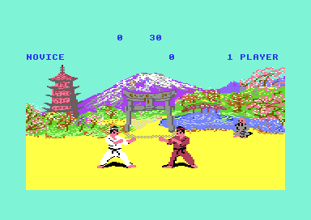

<meta charset="utf-8">
<meta name="viewport" content="width=device-width, initial-scale=1">
<title>{{title}}</title>
<link rel="preconnect" href="https://fonts.googleapis.com">
<link rel="stylesheet" href="https://fonts.googleapis.com/css2?family=Lato:wght@400;700;900&family=IBM+Plex+Mono:wght@400;500&display=swap">
<link rel="stylesheet" href="reference/fist-page.css">
<!-- tabs -->
<header class="hero">
  <p class="eyebrow">{{platform}} · {{year}} · {{publisher}}</p>
  <h1>{{title}}</h1>
  <p class="sub">A one-on-one karate game from 1985 whose fighters are assembled pose by pose from 255 cut-out pieces and scored by how far apart they stand when a blow lands.</p>
</header>
<main class="wrap">
<section id="game">
  <p class="fig">01 · The game</p>
  <h2 class="t">Two fighters, half a minute and a yin-yang for every clean blow</h2>
  <p>Way of the Exploding Fist is a one-on-one karate game. Two fighters face each other on a field in front of a painted backdrop, one in white and one in red. A joystick gives eighteen movements: walking, a crouch, a jump, two somersaults, a turn, punches and kicks. A blow that lands earns half a yin-yang symbol or a whole one, and four halves win the bout. When the clock runs out first, the judge seated in the backdrop decides.</p>
  <p>Alone, the player climbs from Novice to tenth dan against a computer opponent that grows quicker with every rank, and after a rank cleared in front of the Buddha a bull charges across the screen. Two players fight four bouts, one in front of each backdrop, on points.</p>
  <figure class="overview-shot"><figcaption>The start of a one-player bout at Novice, captured in an emulator.</figcaption></figure>
  <p class="overview-links"><a href="mechanics.html">How it works</a><a href="levels.html">The backdrops</a><a href="music.html">Music and speech</a><a href="discoveries.html">Discoveries</a></p>
</section>

<section id="makers">
  <p class="fig">02 · The makers</p>
  <h2 class="t">A Beam Software game for Melbourne House</h2>
  <p>The game names nobody on screen. Beam Software, the Melbourne studio that worked for Melbourne House, wrote it, and Melbourne House published it in 1985. Secondary sources credit the design to Gregg Barnett, the programming to Gregg Barnett and David Johnston, the graphics to Greg Holland and the music to Neil Brennan. Those credits were read on 2 October 2026 in search summaries of the <a href="https://www.c64-wiki.com/wiki/The_Way_of_the_Exploding_Fist">C64-Wiki</a> and <a href="https://en.wikipedia.org/wiki/The_Way_of_the_Exploding_Fist">Wikipedia</a> articles, not in the pages themselves, and should be checked against them.</p>
  <p>Gregg Barnett went on to write the sequel, Fist II: The Legend Continues, which has its own pages on this site. The two programs share a handful of tables byte for byte, among them the table that mirrors a sprite to turn a fighter round and the music's note frequencies, but a byte-for-byte comparison found little else in common.</p>
</section>

<section id="copy">
  <p class="fig">03 · This copy</p>
  <h2 class="t">The Melbourne House disk</h2>
  <p>The pages describe one copy: a disk image of the Melbourne House release, with its menu (<i>Melbourne House presents · 1. exploding fist</i>) and ten files that the loader places in memory before entering the game. No crack or trainer text appears on it. According to the same secondary sources, some early C64 versions lacked the bull; this one has it, and it was played through in the emulator. The <a href="about.html">About</a> tab lists the files and where each one ends up.</p>
</section>

<section id="findings">
  <p class="fig">04 · What the code keeps</p>
  <h2 class="t">A bull with one weak spot, and a trap on a timer nobody starts</h2>
  <p>The bull can be felled by one move at one range and nothing else. A scoring blow crashes the game if a timer the game never uses has been started. The thirty-second clock runs for up to forty seconds, and the music is tuned for an American machine. The <a href="discoveries.html">Discoveries</a> tab collects these and the questions still open.</p>
  <p class="overview-note">The <a href="source.html">Source code</a> tab links every explanation to its address. The <a href="about.html">About</a> tab records credits, sources and methods. No game image is hosted here.</p>
</section>
</main>
<footer style="margin:16px 0 0;padding:22px var(--gx) 0;border-top:1px solid #e0ded8;font-family:'IBM Plex Mono',ui-monospace,Menlo,monospace;font-size:12px;color:#80838a"><a href="/kit.html" style="color:#1f5fa8;text-decoration:none">Kit changelog</a> · <a href="https://github.com/gamesexplained/gamesexplained" style="color:#1f5fa8;text-decoration:none">GitHub</a> · <a href="https://discord.gg/3V9GWyRDWV" style="color:#1f5fa8;text-decoration:none">Discord</a><br>© Games Explained contributors. Write-ups, facts and symbol maps are available under <a href="https://creativecommons.org/licenses/by-sa/4.0/" style="color:#1f5fa8;text-decoration:none">CC BY-SA 4.0</a>; code under <a href="https://opensource.org/licenses/MIT" style="color:#1f5fa8;text-decoration:none">MIT</a></footer>
